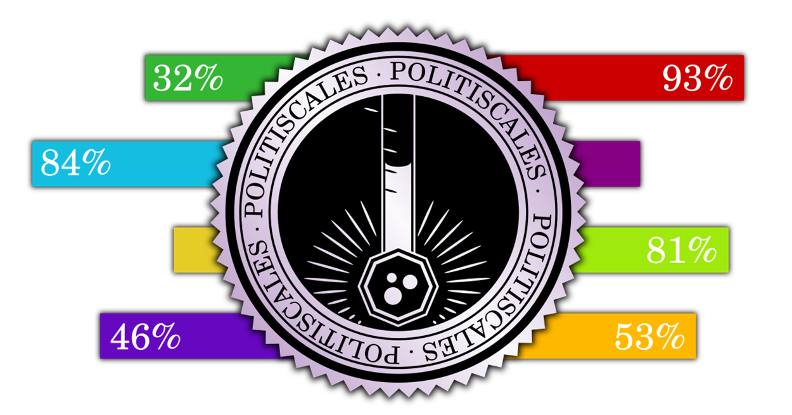

Úvod
Vitajte na stránke PolitiScales, politickom teste, ktorý vás zaradí do politického obrazu. Budete konfrontovaní so sériou výpisov. Pri každom z nich kliknite na tlačidlo zodpovedajúce vášmu názoru.
Otázky predpokladajú, že ste občanom štátu s politickým systémom viacerých strán a trhovým hospodárstvom. Ak to však tak nie je, tento test môže byť stále spoľahlivý pre veľkú väčšinu odpovedí.
Ak nerozumiete významu otázky, skúste si ju vyhľadať na internete, aby ste lepšie pochopili jej význam. Nevkladajte odpoveď náhodne, aby ste neskreslili výsledok.
Tento test sa snaží reprezentovať čo najširšie spektrum názorov, a preto obsahuje výrazy, ktoré vás môžu šokovať, najmä pokiaľ ide o rasizmus a homofóbiu.